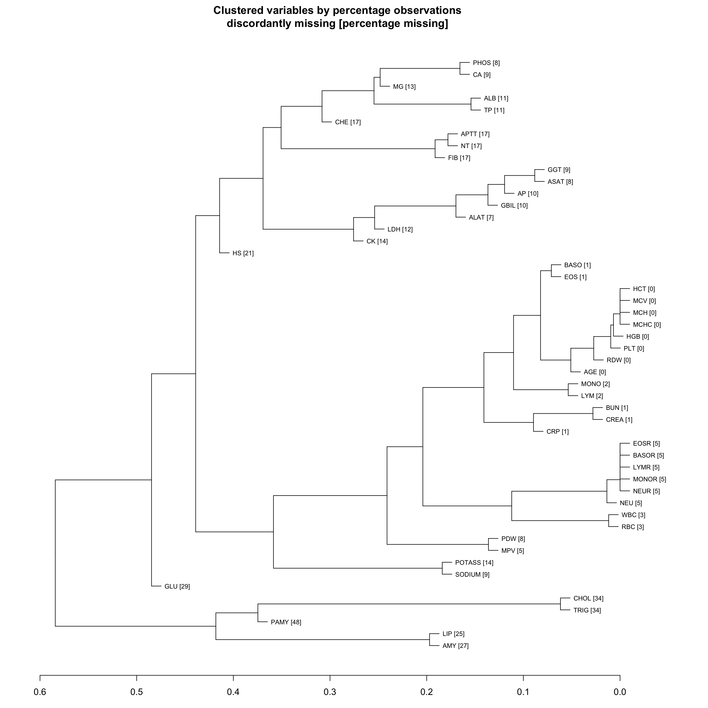

4 Results of IDA: Missing values
THis seciton reports the IDA analyses for missing data. The Section headers (i.e. M1) correspond to the IDA analysis plan in Chapter 2.
4.1 M1: Prevalence of missing values
Number and percentage of missingness for each predictor, sorted by descending missingness proportion.
4.1.1 Outcome and Structural variables
| Summary of missing values for outcome and structural predictors | ||
| Variable | Missing (count) | Missing (%) |
|---|---|---|
| BACTEREMIA | 0 | 0.0 |
| AGE | 0 | 0.0 |
| SEX | 0 | 0.0 |
4.1.2 Lab parameters
Missingness patterns for key and medium importance predictors are reported here. The remaining predictors are reported in Appendix Section C.1 .
| Summary of missing values for key predictors | |||
| Predictor | Description | Missing (count) | Missing (%) |
|---|---|---|---|
| NEU | Neutrophiles (G/L) | 728 | 5.0 |
| WBC | White blood count (G/L) | 462 | 3.1 |
| BUN | Blood urea nitrogen (mg/dl) | 172 | 1.2 |
| CREA | Creatinine (mg/dl) | 159 | 1.1 |
| PLT | Blood platelets (G/L) | 42 | 0.3 |
| AGE | Patient Age (years) | 0 | 0.0 |
| Summary of missing values for medium importance predictors | |||
| Predictor | Description | Missing (count) | Missing (%) |
|---|---|---|---|
| FIB | Fibrinogen (mg/dl) | 2567 | 17.5 |
| POTASS | Potassium (mmol/L) | 2008 | 13.7 |
| GGT | Gamma-glutamyl transpeptidase (G/L) | 1262 | 8.6 |
| ASAT | Aspartate transaminase (U/L) | 1154 | 7.9 |
| ALAT | Alanin transaminase (U/L) | 987 | 6.7 |
| CRP | C-reactive protein (mg/dl) | 155 | 1.1 |
4.2 M2: Complete cases
Number of available complete cases (outcome and predictors):
| Summary of complete cases by sets of predictors | ||
| Set | Complete (count) | Complete (%) |
|---|---|---|
| Outcome | 14691 | 100.0 |
| Outcome and structural variables | 14691 | 100.0 |
| Outcome and key predictors only | 13793 | 93.9 |
| Outcome key predictors and predictors of medium importance | 9389 | 63.9 |
| Outcome and all predictors | 3979 | 27.1 |
4.3 ME1: Patterns of missing values
4.3.1 Complete cases by strata defined by structural variables
| Summary of complete cases by sets of predictors | |||
| Set | # patients | Complete (count) | Complete (%) |
|---|---|---|---|
| female - [16, 50] | |||
| All predictors | 2462 | 604 | 24.5 |
| Key predictors | 2462 | 2309 | 93.8 |
| Medium importance predictors | 2462 | 1656 | 67.3 |
| female - (50, 65] | |||
| All predictors | 1579 | 411 | 26.0 |
| Key predictors | 1579 | 1468 | 93.0 |
| Medium importance predictors | 1579 | 1075 | 68.1 |
| female - (65, 101] | |||
| All predictors | 2114 | 545 | 25.8 |
| Key predictors | 2114 | 1975 | 93.4 |
| Medium importance predictors | 2114 | 1389 | 65.7 |
| male - [16, 50] | |||
| All predictors | 2903 | 805 | 27.7 |
| Key predictors | 2903 | 2744 | 94.5 |
| Medium importance predictors | 2903 | 1993 | 68.7 |
| male - (50, 65] | |||
| All predictors | 2671 | 771 | 28.9 |
| Key predictors | 2671 | 2504 | 93.7 |
| Medium importance predictors | 2671 | 1862 | 69.7 |
| male - (65, 101] | |||
| All predictors | 2962 | 843 | 28.5 |
| Key predictors | 2962 | 2793 | 94.3 |
| Medium importance predictors | 2962 | 2014 | 68.0 |
4.3.2 Dendrogram of missingness indicators
The dendrogram depicts the results of a cluster analysis using the complete linkage method based on the percentage of discordant missing indicators. (This percentage was computed via the squared Euclidian distance of missingness indicators between predictors.) The horizontal axis shows the distance between two clusters, which is given by the maximum distance between any element of the first and the second clusters. For example, if two clusters are merged at a height of 25 it means that in 25% of the observations the missingness indicators of the most discordant predictors contained in the two clusters are discordant.
The numbers in brackets are the percentages of missing observations for each predictor.
